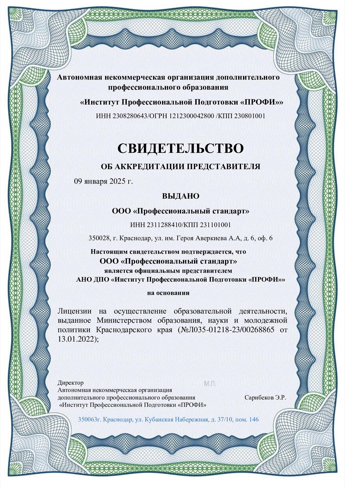
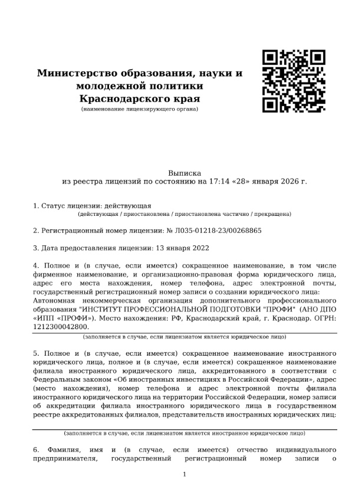
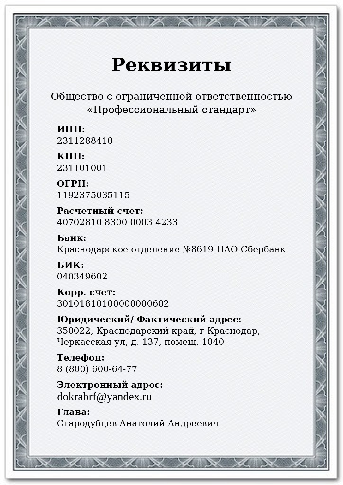

01→
Подбираем программу
Уточняем профессию, исходный уровень, опыт и требования работодателя.
Полноценные программы подготовки, переподготовки и повышения квалификации. Теория, практические занятия и итоговая аттестация — сроком от 2 недель.
Подбираем программу под ваши задачи и требования к квалификации. Если нужной профессии нет в списке — уточните её у специалиста.
Обучение с практической подготовкой
Обучение с практической подготовкой
Обучение с практической подготовкой
Обучение с практической подготовкой
Обучение с практической подготовкой
Обучение с практической подготовкой
Обучение с практической подготовкой
Обучение с практической подготовкой
Поможем найти подходящее направление
Никаких «готовых документов». Только зачисление, занятия, практика, проверка знаний и результат обучения.
Уточняем профессию, исходный уровень, опыт и требования работодателя.
Фиксируем программу, срок, формат занятий и порядок прохождения практики.
Изучаете теорию с преподавателем и отрабатываете навыки на практике.
Подтверждаете знания и практические умения по выбранной профессии.
После успешного завершения программы выдаём документы установленного образца.
Мы заранее объясняем, где и в каком формате будет проходить практическая подготовка по вашей профессии.
После завершения занятий и успешной итоговой аттестации слушатель получает документ, предусмотренный выбранной программой.
о профессии рабочего
Лицензиат — АНО ДПО «Институт профессиональной подготовки „ПРОФИ“». ООО «Профессиональный стандарт» является официальным представителем образовательной организации.

Открыть полностью ↗
Открыть полностью ↗
Открыть полностью ↗Перед заключением договора вы можете ознакомиться с документами в полном размере. Нажмите на любое изображение, чтобы открыть оригинал.
Мы строим процесс так, чтобы квалификация была подтверждена не только документом, но и знаниями.
Договор, программа и понятные условия до начала занятий.
Теория, задания, консультации и обязательная практика.
Проверяем знания и навыки, а не просто ставим отметку.
Куратор помогает на каждом этапе — от заявки до выпуска.
До начала обучения вы получаете договор с программой, сроками, форматом практики и понятным порядком возврата средств.
Если вы решите отказаться от обучения, возврат оформляется в порядке, указанном в договоре. После начала занятий возвращается стоимость неоказанных услуг за вычетом фактически понесённых расходов.
Вы проходите именно ту программу, которая закреплена в договоре: теоретические занятия, практическая подготовка и итоговая аттестация. Вид итогового документа определяется выбранной программой.
Это не рекламные обещания, а условия сотрудничества, с которыми вы знакомитесь до оплаты и начала обучения.
Не нашли нужный ответ? Позвоните — разберём вашу ситуацию без обязательств.
8 (800) 775-02-64Нет. Мы не продаём документы. Сначала слушатель зачисляется на программу, проходит теоретические и практические занятия, а затем итоговую аттестацию. Документы выдаются только после успешного завершения обучения.
Продолжительность зависит от программы, квалификации и исходной подготовки слушателя. Короткие программы начинаются от двух недель; точный учебный план и объём часов фиксируются в договоре.
Формат зависит от профессии: занятия на учебно-производственной базе, отработка навыков под руководством мастера или организованная практика на предприятии. До зачисления мы объясняем, где и как пройдёт практическая часть.
Теоретическую часть многих программ можно пройти дистанционно. Практика и аттестация организуются в формате, предусмотренном конкретной программой и требованиями к профессии.
Вид документа зависит от программы: свидетельство о профессии рабочего, удостоверение, документ о повышении квалификации или профессиональной переподготовке. Менеджер заранее объяснит, какой вариант подходит именно вам.
Уточним требования к поступлению, сроки, формат практики и документы по итогам программы.